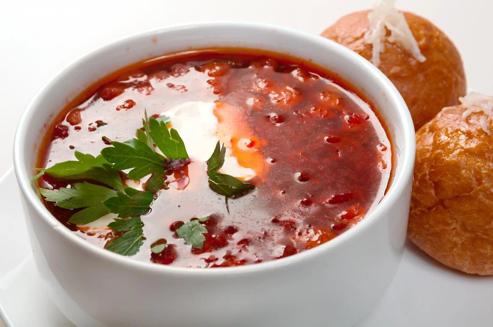

Як приготувати справжній український борщ

Борщ – це культурне надбання України, наша гордість та кулінарний символ нашої країни. Бути байдужим до цього густого наваристого супу просто неможливо.
Рецептів борщу існує безліч і ледь не кожна господиня має свій власний. Хтось любить борщ із квасолею, хтось готує без капусти, а хтось варить його з грибами. Доволі часто рецепти борщу в сім’ях дбайливо передаються з покоління в покоління, а деякі навіть тримаються у суворій таємниці.
Раніше ми говорили про те, як приготувати зелений борщ - рецепт із м'ясом і без нього.
- Класичний український борщ
- Вода – 1,5-2 л.
- свинина або яловичина на кістці – 400 г
- картопля – 4 шт. (середні)
- буряк – 2 шт. (невеликі)
- морква – 1 шт.
- цибуля – 3 шт. (середні)
- капуста білокачанна свіжа – 300 г
- томатна паста – 2 ст. л.
- соняшникова олія – 4-5 ст. л.
- лимонна кислота – дрібка
- сіль, лавровий лист, зелень – за смаком.
Спершу варимо бульйон. У каструлю наливаємо 1,5-2 літра води. Додаємо м’ясо й ставимо на середній вогонь. Перед закипанням знімаємо піну. Щойно бульйон закипить, накриваємо кришкою і варимо на повільному вогні годину-півтори.
Тим часом готуємо засмажку. Чистимо буряк, моркву та цибулю. Буряк натираємо на крупній тертці, а моркву – на середній. Цибулю нарізаємо кубиками.
На середньому вогні в сковороді розігріваємо олію, висипаємо туди цибулю та моркву, смажимо 5 хвилин. Потім додаємо буряк (його можна посипати лимонною кислотою або збризнути соком свіжого лимона – так борщ буде по-справжньому червоним). Смажимо овочі ще 5 хвилин, додаємо томатну пасту, перемішуємо й смажимо все ще 5-7 хвилин.
А тепер варимо сам борщ. З бульйону виймаємо м’ясо і, поки воно холоне, кидаємо в бульйон нашатковану капусту. Через 5-10 хвилин додаємо нарізану соломкою картоплю. Відокремлюємо м’ясо від кістки й нарізаємо кубиками. Повертаємо м’ясо в борщ, солимо його і додаємо засмажку. Перемішуємо борщ, кладемо лавровий лист і дрібно посічену зелень, накриваємо кришкою та варимо все ще 5-7 хвилин.
Подаємо борщ зі сметаною і зеленню.